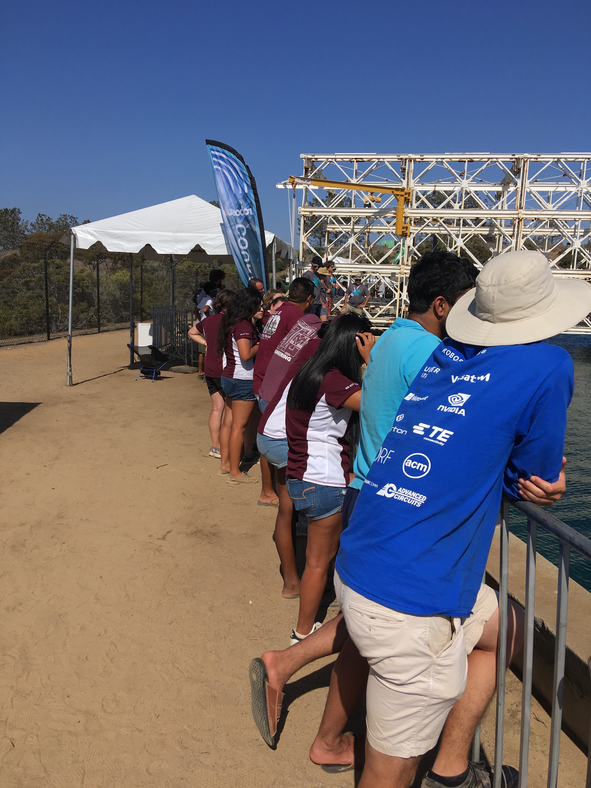
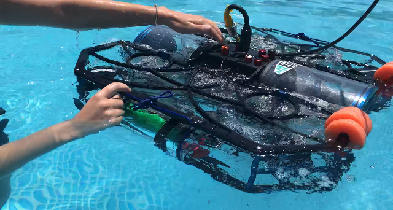
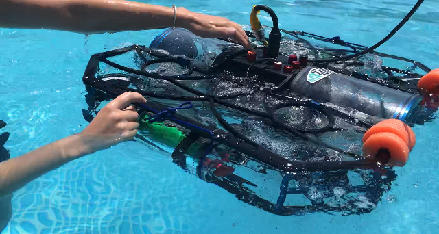
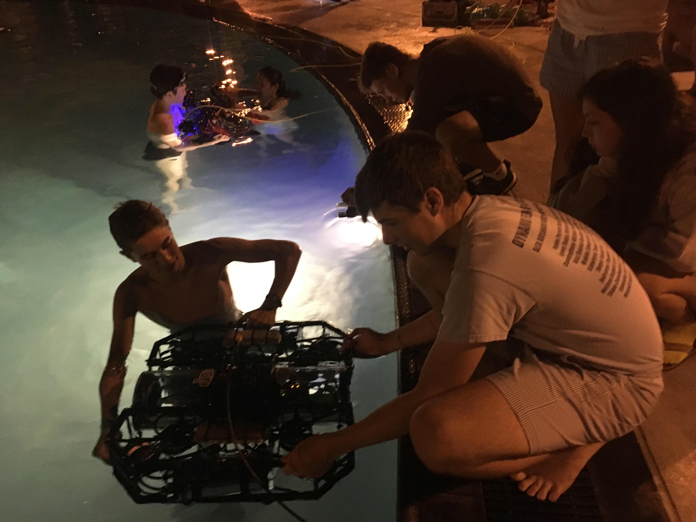
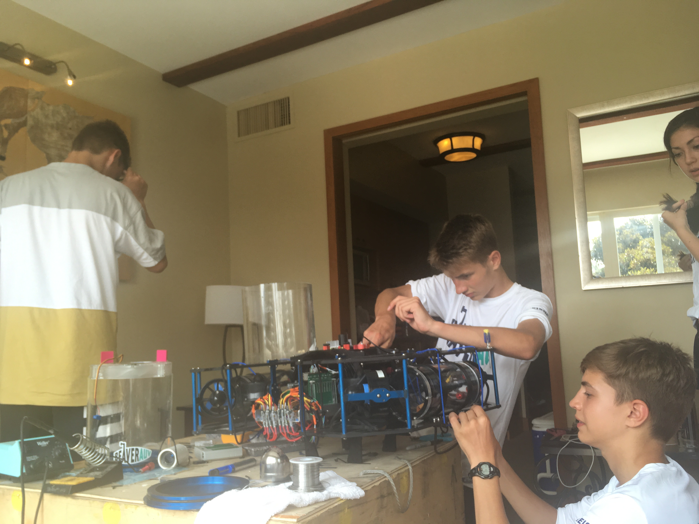
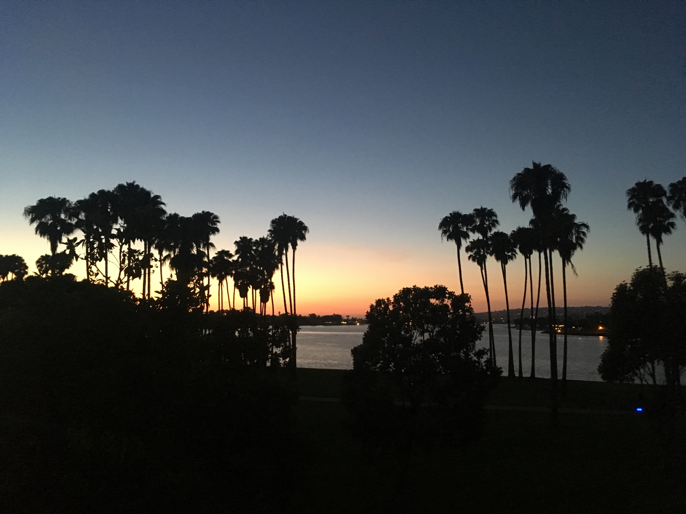
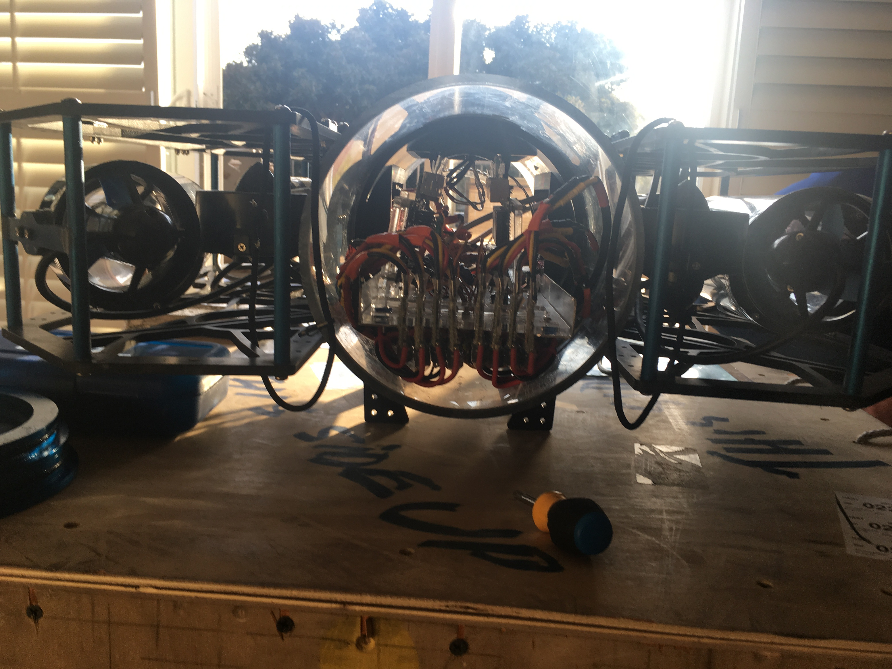
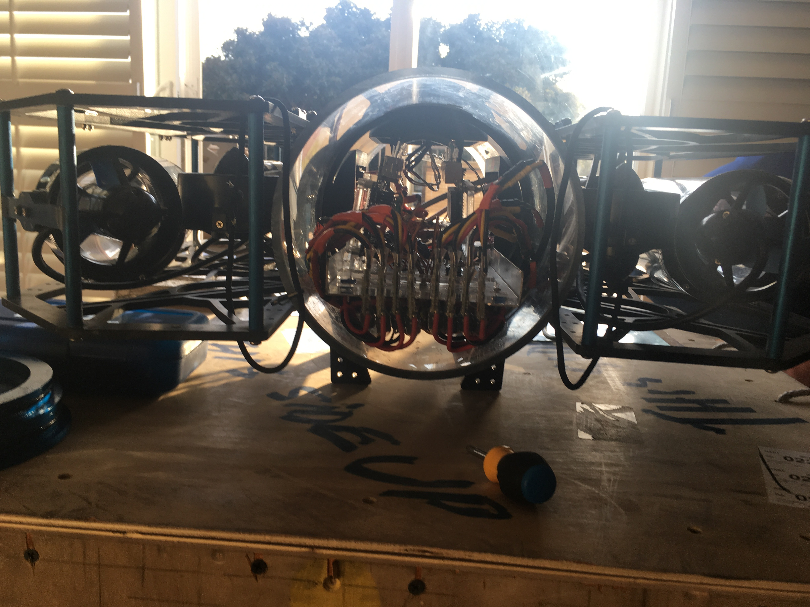

Day 1 Update
August 5, 2018
Tuesday was the first day in the Robosub competition. After we set up our station, we went around to some of the other teams and conversed about their designs, looked for ideas to improve our AUV for next year, and to just build a connection with the incredible minds at the TRANSDEC pool. Later, we took the sub to the “flamingo pool”, which is a small testing pool. Nick got in the water with the sub and helped keep track of and observe the sub during test runs. Using these test runs, we worked to iron out and troubleshoot issues with the interial measurement unit (IMU) and the camera, which we will continue to work on tomorrow. At the end of the day, we attempted to qualify for the semi-finals with success! Though we were unable to use our IMU to resist currents and were thus at the mercy of the water, we were able to angle the sub so it would drive go through the gate. We hope to use our IMU so we can resist the current, making the act of going through the gate as simple as pointing it straight at the gate and it will go straight. We reviewed the footage from the run later, but most of it wasn’t usable as the expose of the camera was too high. Because of this, we are looking to gather some new footage that is usable on Wednesday.
Day 8 Update
August 5, 2018
After an exciting Saturday, we attempted a run in order to win a wild card slot in the finals. We all understood that there was next to no chance we could get the slot because we were up against any team below the top six, we just attempted to do a little better than before by possibly hitting a die. We ended up doing no better because we just went through the gate on the side we called, but we were happy none the less. After our run, we had a lot of down time before we would watch the finals. We ended up resting for a while and eating lunch, but we ended up playing volleyball at a net in one of the practice pools. With extra players from the likes of Gonzaga University and the University of Arizona, we played diligently while watching the final on the jumbotron. We played a little too diligently, as we ended up hitting the volleyball into the TRANSDEC pool during a run! After an exciting final filled with technical achievements, technical failures, and a proposal (she said yes) we went back to the hotel. After resting, we went to the banquet. At the banquet, we won $250 credit from Blue Robotics and Jack won a hat. Additionally, we learned that Harbin University, a school in China, won. After a brief stay at the party, we all retired to our rooms for the longest sleep of the week.
Though it was filled with many great highs and great lows, we all had an amazing time this week. We all gained great technical knowledge both about our own sub as well as others. But most importantly, the social growth for all of us was incredible. As a team, we all grew to know each other very well and share many laughs about many stupid things. Additionally, we got to know the other teams: we further grew our relationship with Sonia, started relationships with UFRJ Nautilus, Gonzaga Unversity, Unversity of Arizona, and many others. Being part of this incredible environment of collaboration and learning was truly captivating, and we can't wait to come back next year better than ever.
Day 7 Update
August 4, 2018
Today was by far the most intense and emotionally volatile day yet. Being the last day we could qualify, we worked against the clock to make the sub work. We started the day of by immediately working and, with the help of the Cornell University team leader, were able to make the sub drive straight. Unfortunately, we messed with the code after that, making the sub stop working. As our last time slot to qualify approached, we swapped to the latest time a team could qualify. After some minor team conflict as well as lunch, we reversed the changes but things still did not work. As we worked and worked, nothing changed and we became more and more concerned. Luckily, with the help of the University of Illinois team leader, we managed to make the sub drive straight and do so not tethered with only 10 minutes before our time slot. We hustled to the main pool and there was nothing left do you but go for it. After many misses that missed by only a few feet, our time ran up. With one last attempt, we qualified and were met with a great cheer. We immediately brought the sub to the main dock where we attempted our semi-final run, which was also the last wild card semi-final slot available before the semi-final runs were shutdown at 5pm. We did the same thing as before and shot for the gate (this time being able to score points). In similarly dramatic fashion, we got the sub through the gate on the last attempt. Ever yet, the day got even crazier. As the RoboSub staff announced the finalists, they left 1 wild card slot open to 16 teams. We were one of these teams. We now are trying to figure out the best way to add to our point total by doing other tasks so that we can have a chance at the finals wild card slot.
Day 6 Update
August 3, 2018
After pulling an all nigher, things did not start of well. We got some work done and were able to make the sub drive straight, but at around 1pm the team started to feel fatigued and we left early. After multiple hours of napping, we got back to work. With the combination of Max and Seth, a start switch was added that was suppose to start the script on the sub (we later found out it didn't work). We also made the LED strip work, which was completely for practical purposes (It just looked cool). After short amounts of testing in the pool, we went to bed.
Day 5 Update
August 2, 2018
Today, we hoped to qualify. Working again with the Robosub founder and alum, Seth, we worked to make the PID usable. We spent significant time in the pool today, tuning the PID, which was somehow already usable, and attempted to use the script necessary the drive through the gate and qualify. Our day changed briefly as we had to present to the judges, explaining our sub and our team. After that, unfortunately, we encountered a leak, which we fixed by taking out the camera (the source of the leak) and filling the pocket that filled with water with a feminine product. We also put the sub in the TRANSDEC pool for the first time. Where, after multiple attempts of running the correcting the code needed to go through the gate, all that came out was multiple dives to the bottom of the pool. Today was also very exciting because we met a lot of employees of big companies, such as Math Works, the makers of Mat Lab, SPAWAR, and Space X.
 

Day 4 Update
August 1, 2018
After another late-night pool testing session, the team is working hard again! We have already talked with our RoboSub alum friend, Seth, attempting to fix error after error in the software. After finally getting the sensors to interact with the software, we found another issue, the depth sensor is broken! After hunting down two seperate teams who might have the sensor we need, we finally trade some epoxy for a sensor. We call it a night early, that being mid-night. Tomorrow, we hope to qualify.

Day 3 Update
July 31, 2018
Our day began at the very first minute of the morning as the team worked late into the night/early in the morning, testing and retesting in the pool trying to perfect the subs dynamic trim system- AKA trying to make the sub steady and neutrally buoyant. After a couple hours of sleep, the team ate breakfast and headed to the TRANSDEC. Preparing for the very first run in the the TRANSDEC pool at three, the team worked on the subs network and socialized with other teams. After, the team had a food truck lunch sitting with a perfect view of both the TRANSDEC pool and the beautiful sea. At three o’clock facing quite a few software issues, the team reassessed and decided to give the spot to another team and head back to the hotel to continue working over a faster network...with AC. At the hotel the team got right to work installing some missing ROS packages and preparing the presentation for Thursday! After hours in the hot sun, the team was tired, but with some tacos, tostadas, and burritos the team was ready to start a new. After a small nap, the team finished off the night with more mid-night pool testing and a bit of hot tub time, going to bed with the promise of qualifying in our dreams.

Day 2 Update
July 30, 2018
Another beautiful day in Southern California, and the team has kicked the day off with breakfast, and some considerable engineering feats. We had cereal without spoons or bowls, but rather with cups and forks- and our creative minds! Working for hours on end, the team added weights to the sub and persevered through some coding system updates. Cooling off at the pool, the team enjoyed the tropical climate with an outside lunch and drinks - meaning water. In the afternoon, the team split as some went to RoboSub orientation and others continued working on the sub. The team then took a much needed break; heading to the pool and returning just in time for a far from “pita-fil” pita dinner. Now, the team is working against the clock preparing the sub for its first late-night water testing in San Diego, fingers crossed! Tomorrow we will make out first attempt to qualify, and the first official day of The RoboSub competition!
 
Day 1 Update
July 29, 2018
After over six hours of flying, the BeaverAUV team finally touched down in San Diego. Taking a short and scenic ride to the hotel, we immediately got settled into our rooms and set out on the hunt for lunch. Passing by colorful houses, exotic bird stores, and beach bubbles, we arrived at a drive through taco stand, it was no Tango Mango, but still hit the spot. After lunch we picked up some much needed supplies at the local Target, took a rest in our beautiful rooms, with even more beautiful views, and finally got to work. Already faced with some setbacks, such as an uninvited system update and an epoxy camera mess, the team has struggled on, all while knowing that things will indeed work out...eventually.
 
